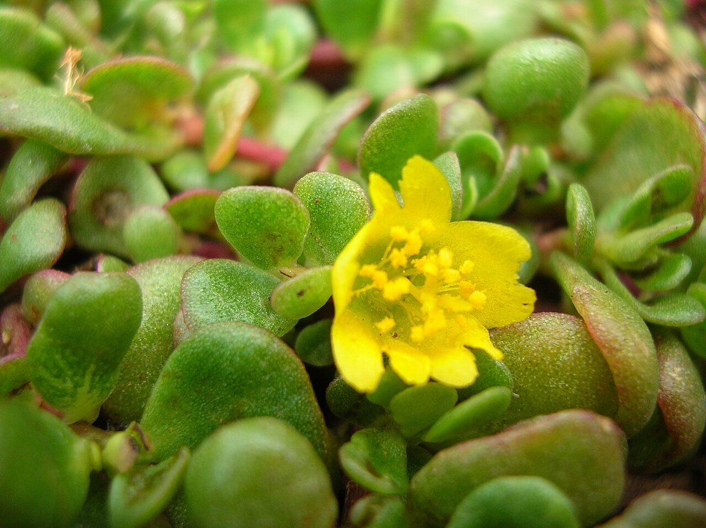
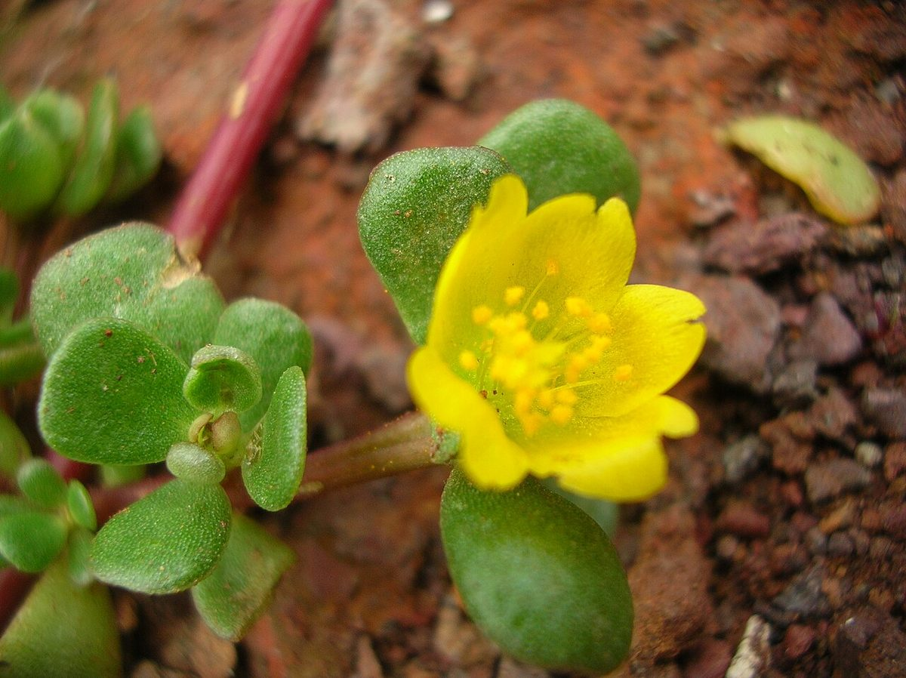

COMMON Beach strand Sea cliff Dune
Portulaca lutea
ʻihi, ʻihi ʻāweoweo · yellow purslane, native purslane



Quick facts
| Family | Portulacaceae |
|---|---|
| Scientific name | Portulaca lutea |
| Hawaiian name(s) | ʻihi, ʻihi ʻāweoweo |
| English name(s) | yellow purslane, native purslane |
| Status | Indigenous (native, non-endemic) |
| Conservation | — |
| Coastal zones | Beach strand Sea cliff Dune |
| Occurrence | A low native succulent of rocky coastal ledges, cliff-top pockets, and offshore islets. On Kauaʻi it occurs on Nāpali coastal outcrops and on the coastal-facing shelves at Māhāʻulepū; more abundant on outer islets than on the main-island shore. |
Uncertainty: Wagner, Herbst, and Sohmer treat *Portulaca lutea* as indigenous across the main Hawaiian Islands including Kauaʻi, and that treatment is followed here. Some later commentators have noted that a subset of main-island populations may reflect Polynesian or later movement; the Kauaʻi coastal populations are treated as indigenous on the strength of Wagner and the Smithsonian FHI database.
How to identify
- Growth form
- Prostrate to ascending fleshy herb 5–15 cm tall, sprawling from a central rootstock and forming loose succulent patches on shallow substrate.
- Size
- 5–15 cm tall; patches 10–40 cm across.
- Leaves
- Alternate, small (5–15 mm), fleshy and distinctly cylindrical (terete) — like tiny green sausages, not flattened. The whole plant is bright green to yellow-green.
- Flowers
- Bright yellow with 5 broad petals, 1.5–2.5 cm across, opening only in strong morning sun and closing by midday.
- Fruit / seed
- A small capsule opening by a circular lid (circumscissile), 3–4 mm, releasing many tiny dark seeds.
- Bark / stem
- Fleshy succulent stems, greenish; no true bark.
- Where it sits on the coast
- Sun-baked coastal ledges, rocky cliff-top pockets with thin soil, and stabilized rocky strand. Not in bare active sand.
Clinchers (features that lock the ID)
- Small alternate cylindrical (terete) succulent leaves — feel one, it is round in cross-section.
- Bright yellow 5-petalled flowers opening only in morning sun.
- Sprawling low succulent on sun-exposed coastal rock or thin substrate.
Look-alikes
- Portulaca oleracea (introduced common purslane) — The introduced species has FLAT obovate leaves (paddle-shaped, widened toward the tip) rather than cylindrical leaves, and smaller yellow flowers. The two share the ʻihi name in general Hawaiian usage but the leaf cross-section is diagnostic.
- Sesuvium portulacastrum (ʻākulikuli kai) — ʻĀkulikuli kai has OPPOSITE flattened-oblong leaves and PINK- purple flowers, versus ʻihi's alternate cylindrical leaves and yellow flowers. The two commonly occur together on offshore islets.
- Portulaca villosa (native) — Portulaca villosa has conspicuous long white hairs at the leaf axils; ʻihi lacks the tufted axillary pubescence.
Ecology
Halophyte and drought-adapter of shallow coastal soils and rock pockets. Its CAM photosynthesis and succulent water-storage allow it to persist on sun-baked outcrops where non-succulents fail. [16], [21], [22], [27]
Cultural significance
The succulent stems and leaves have historically been eaten as a green vegetable in Hawaiian cuisine; preparation belongs to Hawaiian food-culture practitioners and is not detailed here.